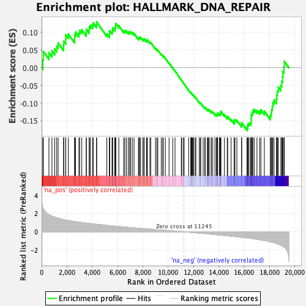

| | | Dataset | Recurrence |
| Phenotype | NoPhenotypeAvailable |
| Upregulated in class | na_neg |
| GeneSet | HALLMARK_DNA_REPAIR |
| Enrichment Score (ES) | -0.1771436 |
| Normalized Enrichment Score (NES) | -0.933788 |
| Nominal p-value | 0.6573427 |
| FDR q-value | 0.6427732 |
| FWER p-Value | 0.995 |
Table: GSEA Results Summary

Fig 1: Enrichment plot: HALLMARK_DNA_REPAIR
Profile of the Running ES Score & Positions of GeneSet Members on the Rank Ordered List
| SYMBOL | RANK IN GENE LIST | RANK METRIC SCORE | RUNNING ES | CORE ENRICHMENT | | 1 | RAD51 | 98 | 2.646 | 0.0220 | No |
| 2 | HCLS1 | 140 | 2.526 | 0.0458 | No |
| 3 | PDE6G | 578 | 1.867 | 0.0424 | No |
| 4 | NELFCD | 817 | 1.717 | 0.0477 | No |
| 5 | NPR2 | 1036 | 1.602 | 0.0528 | No |
| 6 | TK2 | 1194 | 1.535 | 0.0605 | No |
| 7 | MPG | 1306 | 1.491 | 0.0700 | No |
| 8 | DUT | 1736 | 1.342 | 0.0616 | No |
| 9 | ZNRD1 | 1747 | 1.338 | 0.0748 | No |
| 10 | GMPR2 | 1903 | 1.288 | 0.0800 | No |
| 11 | TP53 | 1907 | 1.287 | 0.0930 | No |
| 12 | ERCC8 | 2110 | 1.240 | 0.0953 | No |
| 13 | CLP1 | 2604 | 1.129 | 0.0814 | No |
| 14 | MRPL40 | 2609 | 1.129 | 0.0928 | No |
| 15 | POLR3C | 2683 | 1.111 | 0.1004 | No |
| 16 | BCAM | 2948 | 1.059 | 0.0976 | No |
| 17 | SMAD5 | 3006 | 1.050 | 0.1054 | No |
| 18 | RAD52 | 3175 | 1.019 | 0.1072 | No |
| 19 | DGUOK | 3528 | 0.954 | 0.0988 | No |
| 20 | UMPS | 3530 | 0.954 | 0.1085 | No |
| 21 | CDA | 3758 | 0.915 | 0.1062 | No |
| 22 | GPX4 | 3766 | 0.914 | 0.1152 | No |
| 23 | NME1 | 3854 | 0.900 | 0.1199 | No |
| 24 | TAF12 | 4028 | 0.871 | 0.1199 | No |
| 25 | NFX1 | 4074 | 0.863 | 0.1264 | No |
| 26 | SNAPC4 | 4338 | 0.824 | 0.1213 | No |
| 27 | GUK1 | 4350 | 0.821 | 0.1291 | No |
| 28 | CMPK2 | 5152 | 0.704 | 0.0950 | No |
| 29 | RNMT | 5343 | 0.678 | 0.0921 | No |
| 30 | TAF6 | 5367 | 0.675 | 0.0979 | No |
| 31 | POLR2E | 5369 | 0.675 | 0.1047 | No |
| 32 | ERCC1 | 5564 | 0.649 | 0.1014 | No |
| 33 | TAF13 | 5604 | 0.644 | 0.1060 | No |
| 34 | SURF1 | 5613 | 0.642 | 0.1121 | No |
| 35 | APRT | 5779 | 0.620 | 0.1100 | No |
| 36 | POLD1 | 5806 | 0.617 | 0.1149 | No |
| 37 | UPF3B | 5848 | 0.613 | 0.1191 | No |
| 38 | POLR2D | 5859 | 0.612 | 0.1248 | No |
| 39 | SUPT4H1 | 6099 | 0.582 | 0.1185 | No |
| 40 | EIF1B | 6485 | 0.534 | 0.1041 | No |
| 41 | SDCBP | 6575 | 0.524 | 0.1049 | No |
| 42 | TARBP2 | 6707 | 0.508 | 0.1033 | No |
| 43 | TAF10 | 6855 | 0.491 | 0.1007 | No |
| 44 | POLR3GL | 6950 | 0.477 | 0.1008 | No |
| 45 | SRSF6 | 7032 | 0.465 | 0.1014 | No |
| 46 | VPS37D | 7164 | 0.450 | 0.0992 | No |
| 47 | PCNA | 7300 | 0.435 | 0.0967 | No |
| 48 | PDE4B | 7650 | 0.394 | 0.0827 | No |
| 49 | NME4 | 7694 | 0.388 | 0.0845 | No |
| 50 | TAF9 | 7737 | 0.384 | 0.0862 | No |
| 51 | TAF1C | 7825 | 0.373 | 0.0856 | No |
| 52 | CCNO | 8002 | 0.355 | 0.0801 | No |
| 53 | ITPA | 8084 | 0.344 | 0.0795 | No |
| 54 | RRM2B | 8102 | 0.342 | 0.0821 | No |
| 55 | DGCR8 | 8289 | 0.322 | 0.0758 | No |
| 56 | DDB2 | 8329 | 0.317 | 0.0770 | No |
| 57 | POLH | 8352 | 0.315 | 0.0791 | No |
| 58 | RPA2 | 8558 | 0.295 | 0.0716 | No |
| 59 | NCBP2 | 8621 | 0.289 | 0.0713 | No |
| 60 | RFC2 | 8991 | 0.249 | 0.0548 | No |
| 61 | DDB1 | 9103 | 0.235 | 0.0515 | No |
| 62 | POLE4 | 9182 | 0.226 | 0.0498 | No |
| 63 | GTF2H1 | 9450 | 0.198 | 0.0380 | No |
| 64 | POLA1 | 9568 | 0.183 | 0.0339 | No |
| 65 | VPS28 | 9610 | 0.179 | 0.0336 | No |
| 66 | PNP | 9774 | 0.163 | 0.0269 | No |
| 67 | CANT1 | 10069 | 0.132 | 0.0130 | No |
| 68 | EDF1 | 10359 | 0.099 | -0.0009 | No |
| 69 | RFC3 | 10540 | 0.081 | -0.0093 | No |
| 70 | NELFE | 11036 | 0.024 | -0.0346 | No |
| 71 | POLR2A | 11073 | 0.020 | -0.0363 | No |
| 72 | NELFB | 11209 | 0.005 | -0.0432 | No |
| 73 | SAC3D1 | 11259 | -0.002 | -0.0457 | No |
| 74 | NUDT21 | 11618 | -0.041 | -0.0638 | No |
| 75 | POLA2 | 11795 | -0.063 | -0.0722 | No |
| 76 | LIG1 | 11798 | -0.063 | -0.0717 | No |
| 77 | SUPT5H | 11803 | -0.064 | -0.0712 | No |
| 78 | ELL | 11866 | -0.072 | -0.0737 | No |
| 79 | DAD1 | 11908 | -0.076 | -0.0750 | No |
| 80 | GTF2H5 | 11955 | -0.081 | -0.0766 | No |
| 81 | NT5C | 12004 | -0.088 | -0.0781 | No |
| 82 | POLR2K | 12126 | -0.103 | -0.0833 | No |
| 83 | ALYREF | 12190 | -0.110 | -0.0855 | No |
| 84 | POLR2J | 12457 | -0.141 | -0.0977 | No |
| 85 | SEC61A1 | 12535 | -0.151 | -0.1002 | No |
| 86 | POLD4 | 12570 | -0.154 | -0.1003 | No |
| 87 | BRF2 | 12764 | -0.178 | -0.1085 | No |
| 88 | ADRM1 | 12893 | -0.195 | -0.1131 | No |
| 89 | BOLA2 | 12918 | -0.200 | -0.1123 | No |
| 90 | TMED2 | 13101 | -0.227 | -0.1193 | No |
| 91 | ADA | 13108 | -0.228 | -0.1173 | No |
| 92 | POLB | 13179 | -0.235 | -0.1185 | No |
| 93 | TSG101 | 13249 | -0.244 | -0.1196 | No |
| 94 | AK3 | 13400 | -0.265 | -0.1246 | No |
| 95 | POLR1C | 13415 | -0.267 | -0.1226 | No |
| 96 | BCAP31 | 13522 | -0.282 | -0.1252 | No |
| 97 | GTF3C5 | 13697 | -0.307 | -0.1310 | No |
| 98 | ZWINT | 13809 | -0.321 | -0.1335 | No |
| 99 | ERCC3 | 13864 | -0.326 | -0.1329 | No |
| 100 | SF3A3 | 13890 | -0.329 | -0.1308 | No |
| 101 | ERCC5 | 13905 | -0.331 | -0.1282 | No |
| 102 | RBX1 | 14041 | -0.347 | -0.1316 | No |
| 103 | VPS37B | 14106 | -0.356 | -0.1312 | No |
| 104 | ZNF707 | 14123 | -0.359 | -0.1284 | No |
| 105 | DCTN4 | 14142 | -0.363 | -0.1256 | No |
| 106 | NUDT9 | 14168 | -0.366 | -0.1231 | No |
| 107 | GTF2H3 | 14442 | -0.401 | -0.1331 | No |
| 108 | REV3L | 14665 | -0.431 | -0.1401 | No |
| 109 | POLR2G | 14701 | -0.435 | -0.1375 | No |
| 110 | ADCY6 | 14968 | -0.473 | -0.1464 | No |
| 111 | MPC2 | 15210 | -0.510 | -0.1536 | No |
| 112 | NME3 | 15212 | -0.510 | -0.1484 | No |
| 113 | XPC | 15275 | -0.520 | -0.1463 | No |
| 114 | TYMS | 15427 | -0.541 | -0.1485 | No |
| 115 | CSTF3 | 15799 | -0.601 | -0.1615 | No |
| 116 | POLR2H | 15804 | -0.602 | -0.1556 | No |
| 117 | SSRP1 | 16223 | -0.667 | -0.1703 | Yes |
| 118 | RFC5 | 16282 | -0.678 | -0.1664 | Yes |
| 119 | ARL6IP1 | 16290 | -0.679 | -0.1598 | Yes |
| 120 | AAAS | 16372 | -0.693 | -0.1568 | Yes |
| 121 | RALA | 16495 | -0.715 | -0.1558 | Yes |
| 122 | ERCC2 | 16549 | -0.725 | -0.1511 | Yes |
| 123 | RAE1 | 16558 | -0.726 | -0.1441 | Yes |
| 124 | POM121 | 16565 | -0.728 | -0.1370 | Yes |
| 125 | USP11 | 16584 | -0.732 | -0.1304 | Yes |
| 126 | PRIM1 | 16664 | -0.747 | -0.1268 | Yes |
| 127 | POLR2C | 16684 | -0.750 | -0.1201 | Yes |
| 128 | AGO4 | 16792 | -0.774 | -0.1177 | Yes |
| 129 | SNAPC5 | 17013 | -0.823 | -0.1206 | Yes |
| 130 | POLR2I | 17227 | -0.873 | -0.1227 | Yes |
| 131 | POLL | 17325 | -0.893 | -0.1185 | Yes |
| 132 | COX17 | 17596 | -0.961 | -0.1226 | Yes |
| 133 | STX3 | 18062 | -1.095 | -0.1354 | Yes |
| 134 | POLR2F | 18132 | -1.119 | -0.1275 | Yes |
| 135 | NT5C3A | 18174 | -1.133 | -0.1180 | Yes |
| 136 | IMPDH2 | 18223 | -1.148 | -0.1087 | Yes |
| 137 | GTF2F1 | 18266 | -1.163 | -0.0990 | Yes |
| 138 | GTF2A2 | 18361 | -1.198 | -0.0916 | Yes |
| 139 | CETN2 | 18555 | -1.287 | -0.0883 | Yes |
| 140 | HPRT1 | 18578 | -1.299 | -0.0762 | Yes |
| 141 | RPA3 | 18625 | -1.317 | -0.0650 | Yes |
| 142 | ERCC4 | 18696 | -1.363 | -0.0547 | Yes |
| 143 | GTF2B | 18898 | -1.472 | -0.0500 | Yes |
| 144 | POLR1D | 18973 | -1.517 | -0.0383 | Yes |
| 145 | RFC4 | 19031 | -1.553 | -0.0253 | Yes |
| 146 | AK1 | 19058 | -1.577 | -0.0105 | Yes |
| 147 | FEN1 | 19146 | -1.667 | 0.0021 | Yes |
| 148 | POLD3 | 19174 | -1.694 | 0.0181 | Yes |
Table: GSEA details [plain text format]
Fig 2: HALLMARK_DNA_REPAIR: Random ES distribution
Gene set null distribution of ES for HALLMARK_DNA_REPAIR